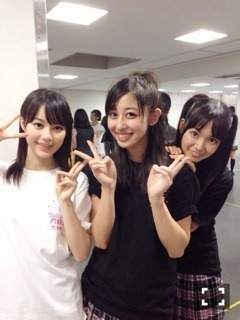

| 2013/10 07 Mon | 斎藤ちはる 花。 |
まずは、代々木第一体育館でのライブ、
ほんとうに、ほんとうにありがとうございました！！！
ハーフアップ！
楽しすぎて、始まりから終わりまで本当あっという間。(´･ω･`)
もっともっと、ステージで踊っていたかったな。(´･ω･`)
だからこそ、武道館が決まったときには嬉しくて涙がでてきました。
気づかないうちだったな。嬉しすぎたのかな。
ということで、代々木、最高でした！！
たくさんの方の目の前までいけたから
楽しんでもらいたいという思いは伝わったと信じてますわ♡！笑

いくちゃん、ちーちゃん、ひめたん！
だいすき中3組！！
ライブ終了直後だから汗びっしょり。(´・д・｀)笑
ほんとにみなさんありがとうございました！！！
(●´-` ●)(●´-` ●)(●´-` ●)(●´-` ●)
そして、７thシングル、選抜発表。
まずは、
川後、みさみさ、ひめたん、本当に本当におめでとう。
やっと、ずっと待ってやっと、花が咲いたね。
ずっと辛かったよね。
ずっと頑張ってきたよね。
その頑張りを知ってるからこそ、
涙が止まらなかったよ。
たくさんの方がなんで今までこの子達が入らなかったんだ、って絶対思うはず。
乃木坂ファンの方はそれをわかってるから大丈夫だよ。
頑張ってきてね。
そして、わたし。
なんだろう。。
今回はいつもよりも悔しいな。
いつもは
しょうがない、まだまだだもん。
これからだよね。
とか言い訳してきたけど、
もうそんな言い訳なんて通用しなくなってきた。よね。
全国のzeppでライブしたり、
昨日は代々木でライブが無事終了したり、
後輩が増えたり、
少しづつ名前を覚えてもらったり、
この夏、全力で駆け抜けてきました。
そして去年に比べたら自分に自信が持てるようになりました。
でも、どうしても結果がついてこない。
花が、咲かない。
蕾のままだ。
どうしたらいいんだろう。
どうしたら花が咲くのだろう。
どうしたら蕾が割れるのだろう。
だけど
ここまできたら、悩んでる暇なんてない。
考えてる暇なんて少しもない。
自分の目の前で輝いてる子たちからたくさんのものを吸収して、
一歩一歩成長していくしかない。
少しづつ少しづつ、蕾を膨らませていくしかない。
いつ咲くかわからないけど、
その日を信じて地道に頑張るしかない。
ずっと前に、わたしは縁の下の力持ちです。
なんて言ってた。
でも、、
もう、、、
縁の下なんていやだ。
縁の下の力持ちだって必要かもしれない。
でも、前にでなければ、表に出なければ、なにも始まらない。
わたし、変わりました。
自分を持つこと。
ブレないこと。
競争心を持つこと。
そして時に支え合うこと。
とても大切だと思う。
いつか咲く花のために、
蕾を、膨らませていきます。
いつもありがとう。
斎藤ちはる